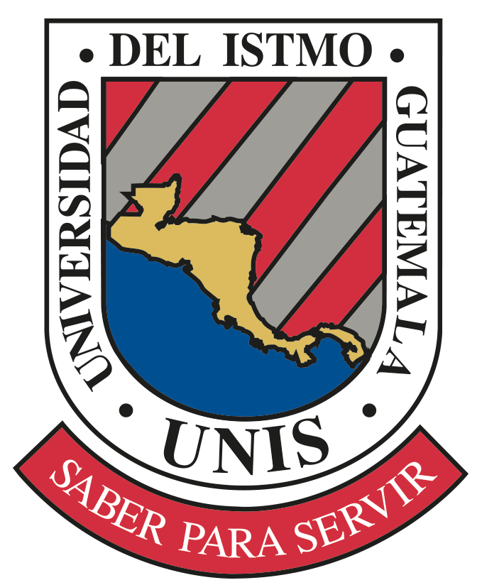

Ciclo Básico
Kinal ofrece su programa de Educación General Básica para todos aquellos jóvenes que buscan una orientación técnica y excelencia académica.

Kinal ofrece su programa de Educación General Básica para todos aquellos jóvenes que buscan una orientación técnica y excelencia académica.
Proporciona Educación a Nivel Diversificado con calidad académica a jóvenes, en las carreras de Perito Técnico con opción a especialización en área técnica.
La Escuela Técnica Superior brinda servicios de capacitación técnica y tecnológica, dirigidos a empresas y personas individuales que desean desarrollar competencias laborales al mejor nivel.
Kinal ofrece su programa de Educación General Básica para todos aquellos jóvenes que buscan una orientación técnica y excelencia académica.

Programas Complementarios
Programa de Tutorías
Formación de Valores
Desarrollo Empresarial y Liderazgo
Academias Deportivas
Escuela para Padres de Familia

Dibujo Técnico
Neumática
Electrónica y Sensores
Electricidad
Hidráulica
Automatización
Tornos CNC
Mecánica

Matemática
Educación Física
Ciencias Naturales
Idioma Extranjero Inglés
Expresión Artística
Química
Tecnologías del Aprendizaje
Física Fundamental
Cultura Maya

Proporciona Educación a Nivel Diversificado con calidad académica a jóvenes, en las carreras de Perito Técnico con opción a especialización en área técnica.

Desarrollo de aplicaciones web y móviles con Java, Microsoft, Visual Studio, Oracle y diseño de redes informáticas con Cisco System.

Diseño de amplificación y regulación de señales, micro controladores. Lenguajes de programación Basic, Micro Basic, Micro C., mantenimiento de sistemas de cómputo, plataforma de Cisco Networking Academy.

Autoestudio Universidad Honda Japón, mecanismos servo asistidos, mecánica de motores diésel y gasolina, sistemas de ignición e inyección. Diagnóstico computarizado.

La carrera de Perito en Electricidad Industrial tiene como objetivo formar a jóvenes para alcanzar el nivel de técnicos en el área de instalaciones eléctricas domiciliares e industriales, en base a la filosofía de Kinal de realizar el trabajo bien hecho.

Modelado 3D Mecánico: Planos de ingeniería: estructural, eléctrico, redes, domótica y de agua. Aplicación arquitectónica: diseño básico, modelado de muebles, dibujo natural y artístico. Uso de impresora 3D, cortadora láser. Programas AutoCAD, BIM Revit, Autodesk USA.
Las carreras de tecnología brindan servicios de capacitación técnica y tecnológica, dirigidos a empresas y personas individuales que desean desarrollar competencias laborales al mejor nivel.

El curso está dividido en dos partes, en la primera se frece una introducción a los conceptos, la terminología y la sintaxis de programación orientada a objetos, y los pasos necesarios para crear programas Java básicos mediante actividades prácticas y participativas. También aprenderán los conceptos del uso de la terminal y línea de comandos y repositorios. En la segunda parte se introduce la programación de dispositivos móviles basado en la plataforma Android. Se realiza una aplicación desde cero, tomando en cuenta las tendencias actuales.

Al solicitar un Desarrollador Full-Stack las empresas buscan personal que domine el Back-End y el Front-End. Esta carrera forma profesionales con sólidos conocimientos y habilidades en desarrollo de aplicaciones empresariales basados en servicios web y administración y gestión debase de datos. Prerrequisitos: Completar curso de Fundamentos de Programación o estar laborando en el área o poseer mínimo un año de estudios relacionados.
La Escuela Técnica de Kinal ofrece una formación práctica orientada al desarrollo de habilidades reales, combinando tecnología, valores y disciplina para preparar a los estudiantes para el mundo laboral.


La Escuela Técnica Superior brinda servicios de capacitación técnica y tecnológica, dirigidos a empresas y personas individuales que desean desarrollar competencias laborales al mejor nivel.

Técnicos en Electricidad Industrial
Instalaciones Eléctricas Generales
Controles y Máquinas Eléctricas
Técnicos en Electrónica Industrial
Fundamentos de Electrónica Industrial
Electrónica Industrial Aplicada
Técnicos en Mecánica Automotriz
Mecanismos del Automóvil
Mecánica de Motores
Técnicos en Construcción
Fundamentos de la Construcción
Administración de Obras

Mantenimiento Mecánico Industrial
Refrigeración Industrial
Certificación Nacional de Técnico Frigorista
Diseño y Construcción
Revit Arquitectura / Estructuras / MEP
AutoCAD 2D / 3D

Mecánica de Motocicletas
Electromecánica Automotriz
Inyección Electrónica
Aire Acondicionado Automotriz
Calderas de Vapor
Soldadura Industrial
SEA, SOA, MAG, TIG
Automatización Industrial
Mecánica Automotriz
Mecánica Industrial
Electrónica Industrial
Electricidad Industrial
Telecomunicaciones
Lenguajes de Programación Aplicados
TÉCNICO UNIVERSITARIO
Dirigido al fortalecimiento de mandos medios y de modo especial, a todos aquellos que han realizado estudios de capacitación técnica y desean llevar dichos estudios a un nivel superior. 3 años, dos años de estudios en carreras técnicas afines y un año académico.
